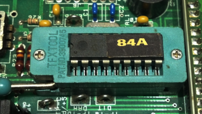

Elmer 160
Converting Elmer160 Code for the PIC16F628A

Legal Notice
Copyright
© 2011 John J. McDonough, WB8RCR. This material may only be distributed subject to the terms and conditions set forth in the Creative Commons Unported Share Alike (CC-BY-SA), V3.0 or later (the latest version is presently available at
http://creativecommons.org/licenses/by-sa/3.0/).
Abstract
How to convert the Elmer 160 code to the PIC16F628A used in the PIC-EL II and PIC-EL III
The original Elmer 160 course was written around the PIC16F84A microcontroller. Even at the time this was a somewhat controversial decision. The PIC16F84A is a relatively expensive part, and is the least capable of the 14-bit core PICs. However, this lack of capability leads to greater simplicity; something very worthwhile when learning a new subject.
The American QRP Club kitted a device called the PIC-EL, designed by AA0ZZ and others, to go along with the course. Eventually, the supply of kits ran out, but demand for the kit remained high.
Craig Johnson, AA0ZZ, negotiated with Kanga U.S. to distribute an updated version of the PIC-EL. Having a commercial supplier meant that there could be an almost unlimited supply for future students. The new, PIC-EL II however, used the PIC16F628A instead of the simpler PIC16F84A.
There are a number of reasons to select the newer part:
It is considerably cheaper
It has twice the memory of the older part
It has additional, useful peripherals
It was not clear how much longer the PIC16F84A would be available
Later still the PIC-EL III was introduced, incorporating a USB programmer, but retaining the PIC16F628A. Since few modern computers have the serial port required of the earlier devices, the PIC-EL III is the tool of choice for new students. However, the lessons are written around the PIC16F84A.
Since the PIC16F628A is significantly more complex than the PIC16F84A, new students are encouraged to obtain a PIC16F84A (which can be used in the newer boards) to follow the lessons. Code for using other PICs is introduced later on in the lessons, so at that point it makes sense to use the PIC16F628A. Indeed, there are quite a number of PICs that may be used in the PIC-EL, and for new designs, almost anything makes more sense than the PIC16F84A. However, the PIC16F84A is far simpler, so it is recommended for beginners.
Although the PIC16F84A is significantly more expensive than the PIC16F628A, it is still fairly inexpensive. But it isn't something the student can pick up at the local hardware store, and as a result, shipping often costs several times the cost of the part. As a consequence, many students choose to continue with the PIC16F628A in spite of the problems.
Fortunately, most code is transportable between the various PICs within a family. There are only a handful of changes necessary in the examples in the course. This is a bit misleading since the user may be blindsided to some issues in his own code if attempted before getting to the parts of the course that explain the differences.
The basic changes required are:
There are obvious changes such as the processor name and the name of the processor include file.
There are additional configuration fuses.
For the absolute code examples early in the lessons, the general purpose registers start at a different address.
In the PIC16F628A the general purpose registers are banked. In the PIC16F84A, they are not. This could lead to the student discovering that his variables have suddenly disappeared for no apparent reason. Without a debugger, this could be very hard to diagnose.
Some special function registers appear in different banks in the two processors. This largely affects the interrupts and the EEPROM, so the student is unlikely to encounter this issue early on.
The PIC16F628A includes a comparator which is enabled by default. If the student wishes to use the comparator pins for ordinary I/O, the comparator must be turned off.
There are a number of obvious issues to deal with. First, perhaps most obvious, select the
PIC16F628A as the processor type in
MPLAB. Choose from the menu, scroll down to the correct device.
Next, change the processor line in the source file:
processor pic16f628a
Thirdly, change the name of the processor include file:
include "P16F628A.INC"
Maybe not now, but perhaps later
In
MPLAB 8 and earlier, the case of the include file doesn't matter. In most cases, the examples show the file name in lower case, because a number of students use
gpasm which expects lower case file names. However, the more recent
MPLAB-X expects upper case names. Since
gpasm complains about an upper case name, but still finds it, while
MPLAB-X simply fails, it is probably preferable to use upper case names for the include file.
The newer processor, with new features, of course includes additional configuration fuses. Some of those fuses turn out to be important. In the
PIC16F84A the configuration fuse setting almost always looked like:
__config _XT_OSC & _WDT_OFF & _PWRTE_ON
These particular settings are still generally used for the
PIC16F628A. They mean:
_XT_OSC - Use a crystal between 4 and 10 MHz.
_WDT_OFF - Don't use the watchdog timer. The watchdog timer creates an interrupt at a specific interval so if code hangs we could program a recovery. Since we don't have the code to handle this, we don't want an interrupt occurring every few minutes.
_PWRTE_ON - Turn on the power up timer. This one isn't terribly important in most cases. it simple inserts a small delay before the program starts so that any circuitry that may need a little time to stabilize before processing can do so.
However, the PIC16F628A has a few other settings, some important, some not so much.
_LVP_OFF - This one is quite important since normally it should be OFF but the default is ON. If this bit is set to _LVP_ON (or omitted), then should pin 10 become high, the processor will enter programming mode. On earlier (and later) PICs, a high voltage on MCLR was required to enter programming mode. On a few PICs introduced around the same time as the PIC16F628A, this fuse allows in the field programming with only a single power supply. However, unless the circuitry takes this into account and ensures the programming pin cannot become high at the wrong time, an improper setting can cause surprising operation.
_MCLRE_ON - If set OFF, this allows MCLR to be used as an input instead of processor reset. Since the PIC-EL is not wired this way, in most cases the student will want it ON. This fuse defaults "correctly".
_BOREN_OFF - This fuse controls a reset on brown out (low voltage). This allows for special action to be taken in the milliseconds before loss of power. In most cases of interest to students, this setting doesn't matter.
_CP_OFF, _CPD_OFF - These settings control code protection. If set on, the program memory or EEPROM cannot be read by a programmer, meaning that programming cannot be verified. Typically these should both be OFF, which is the default.
So, in most cases for the
PIC-EL, the settings should be:
__config _XT_OSC & _WDT_OFF & _PWRTE_ON & _LVP_OFF & _BOREN_OFF
4. General Purpose Register Address
The PIC16F84A has 18 Special Function Registers (SFRs) with addresses from 0x00 to 0x0b in two banks. The PIC16F628A has 33 Special Function Registers with addresses fro 0x00 to 0x1f. In the PIC16F84A the General Purpose Registers (GPRs) start at 0x0c. Since that space is taken on the PIC16F628A by SFRs, the GPRs don't start until 0x20.
When writing absolute code, (Lessons 15 and earlier) the assembler cannot "allocate" GPR memory. It is up to the programmer to keep track of memory use. In most cases this is done by assigning specific addresses for storage of each variable. For example, In lesson 4 there is code like:
; Variable Storage
Spot1 equ H'30' ; First program variable
Spot2 equ H'31' ; Second program variable
To convert a program from the PIC16F84A to the PIC16F628A it is necessary to modify each of those equivalences to ensure they are in the GPR region of memory for the target processor.
If the student is unfamiliar with the program being ported, this can be problematic as there are many other uses of the equ statement, and the developer must understand each use to decide the correct action. This operation can be highly error prone.
The assembler provides a cblock directive which creates sequential equ statements. This allows GPRs to be "allocated" in a single place, with a single starting address. Most of the PIC Elmer code uses this method, because it makes it far easier to port programs to other processors. The programmer need only ensure that the range of the single block is within the GPR range of the target processor.
Further, most of the PIC Elmer examples use few memory locations, and cblock addresses were selected that fall in the range of all the PICs. (All the 14 bit core parts except the PIC16F84A share the 0x20 to 0x7f GPR range of the PIC16F628A.)
So if the student should encounter something like:
cblock H'0c'
Buttons ; Storage for inputs
LEDs ; Storage for outputs
endc
it will be necessary to change the
H'0c' to some higher value, at least
H'20', assuming the student is confident that the symbols point to GPR locations and don't have some other use.
Of course, none of this matters in relocatable programs.
5. Special Function Registers
The PIC16F628A has thirty-three Special Function Registers in four banks. Six of these are echoed in all banks; the same six as in the PIC16F84A.
However, those registers that are not in all the banks are not always in the same banks as the PIC16F84A. Fortunately, the most commonly used registers are. PORTA, TRISA, PORTB and TRISB are all found in their familiar locations.
Unfortunately, even this isn't as simple as it sounds. The
TRIS registers are in bank 1, as in the 84. But, the student is likely to put most of his data in bank 0. On the 84, data in bank 0 also appears in bank 1, but that isn't the case in the
PIC16F628A. The data in bank 1 is different data than in bank 0. Typically the programmer only sets the
TRIS registers once in the program, and usually immediately switches back to bank 0. In most cases, there is no need for the data at the time the
TRIS registers are set up.
Things get more interesting with the EEPROM, though. In the PIC16F84A, the EEDATA and EEADR registers are in bank 0, while the EECON1 and EECON2 registers are in bank 1. This works our reasonably well as the programmer generally needs access to data when dealing with EEDATA and EEADR, but not the others. On the PIC16F628A, however, all these registers are in bank 1. This not only means that the banksel directives need to be moved around when converting code, the the student must be alert to where the settings are as data is manipulated.
Consider the following code for the
PIC16F84A:
Loop
movf Location, W ; Location in EEPROM
movwf EEADR ; Set the EEPROM address
banksel EECON1 ; Select bank for EECON1
bsf EECON1,RD ; Initiate read
banksel EEDATA ; Back to bank 0
movf EEDATA,W ; Pick up the data
movwf Target ; and store it off
incf Location,F ; Point to next EEPROM loc
decfsz Index,F ; Count down
goto Loop ; Go do next location
The corresponding code for the
PIC16F628A has a number of differences, both in the location and targets of the
banksel directives:
Loop
movf Location, W ; Location in EEPROM
banksel EEADR ; Select bank for EE regs
movwf EEADR ; Set the EEPROM address
bsf EECON1,RD ; Initiate read
movf EEDATA,W ; Pick up the data
banksel Target ; Back to bank 0
movwf Target ; and store it off
incf Location,F ; Point to next EEPROM loc
decfsz Index,F ; Count down
goto Loop ; Go do next location
On the PIC16F84A, all the pins at power up are configured as digital inputs. A couple of pins have special functions that may be enabled, but on power up, all pins are digital inputs. Students, therefore, are often surprised to see that is not the case on the PIC16F628A. RA0 through RA3 are configured for analog at power up.
These pins serve as comparator inputs on the 628, and cannot be used as ordinary digital I/O until the comparator is disabled. At first glance, doing this is fairly simple:
movlw H'07'
movwf CMCON
Indeed, when used in the PIC-EL, this is typically all that is required for most applications.
However, especially for your own applications, there is a dark side.
It is possible to damage the PIC in software
PICs are extremely robust devices and can take a startling amount of abuse, but in this area of analog inputs, there is a significant risk of damaging the part.
On any PIC input which may accept an analog voltage, the pin defaults to analog rather than digital. This is because an analog pin set to be a digital input and left unconnected may cause significant current to flow inside the part. This current is capable of destroying the PIC. This can also occur if the pin is set to digital and held at an intermediate voltage; i.e. neither fully true or fully false.
This is not an issue on the PIC-EL because these pins are all pulled up. They will remain at the supply voltage unless pulled down by a switch or the encoder. But in any case, they cannot be left at an intermediate state on the PIC-EL.
However, for other designs, the student must either ensure that the pin cannot face a high impedance, or not allow the pin to be in its digital input configuration. Setting the pin to be a digital output is an acceptable strategy, as is leaving the comparator enabled.
A. Revision History
| Revision History |
|---|
| Revision 0,1 | Wed Dec 21 2011 | John McDonough |
|
|